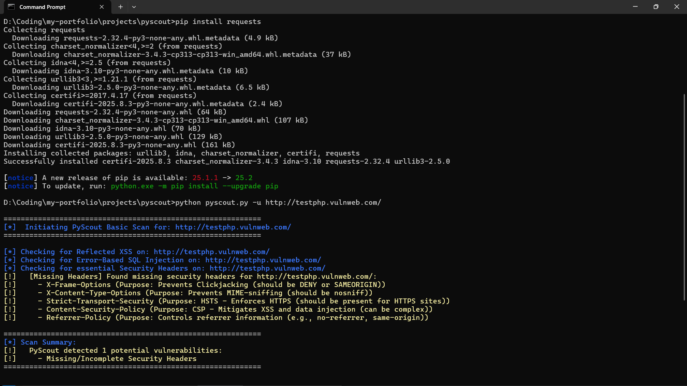

PyScout: A Basic Web Vulnerability Scanner
PyScout is a command-line interface (CLI) tool developed in Python, designed to perform fundamental web vulnerability checks. This project demonstrates my understanding of common web security flaws and how to programmatically identify them.
Features:
- **Reflected Cross-Site Scripting (XSS) Detection:** Identifies potential XSS vulnerabilities by injecting test payloads and checking for their reflection in the HTML response.
- **Error-Based SQL Injection Detection:** Attempts to trigger database errors using SQL injection payloads, indicating potential SQLi vulnerabilities.
- **Security Header Analysis:** Checks for the presence and proper configuration of essential HTTP security headers (e.g., X-Frame-Options, X-Content-Type-Options, Strict-Transport-Security, Content-Security-Policy, Referrer-Policy).
How to Run PyScout:
PyScout is a Python script that runs directly from your terminal.
- **Navigate to Project Directory:**
cd D:\Coding\my-portfolio\projects\pyscout - **Install Dependencies:** Ensure you have the `requests` library installed:
pip install requests - **Execute the Scan:** Run the script with the target URL using the `-u` or `--url` argument:
python pyscout.py -u http://example.com/Note: Always ensure you have explicit permission to scan any website. For testing purposes, you can use intentionally vulnerable sites like http://testphp.vulnweb.com/.
Sample Output:
Here's an example of PyScout detecting missing security headers:

============================================================
[*] Initiating PyScout Basic Scan for: http://testphp.vulnweb.com/
[*] Checking for Reflected XSS on: http://testphp.vulnweb.com/
[*] Checking for Error-Based SQL Injection on: http://testphp.vulnweb.com/
[*] Checking for essential Security Headers on: http://testphp.vulnweb.com/
[!] [Missing Headers] Found missing security headers for http://testphp.vulnweb.com/:
[!] - X-Frame-Options (Purpose: Prevents Clickjacking (should be DENY or SAMEORIGIN))
[!] - X-Content-Type-Options (Purpose: Prevents MIME-sniffing (should be nosniff))
[!] - Strict-Transport-Security (Purpose: HSTS - Enforces HTTPS (should be present for HTTPS sites))
[!] - Content-Security-Policy (Purpose: CSP - Mitigates XSS and data injection (can be complex))
[!] - Referrer-Policy (Purpose: Controls referrer information (e.g., no-referrer, same-origin))
============================================================
[*] Scan Summary:
[!] PyScout detected 1 potential vulnerabilities:
[!] - Missing/Incomplete Security Headers
============================================================